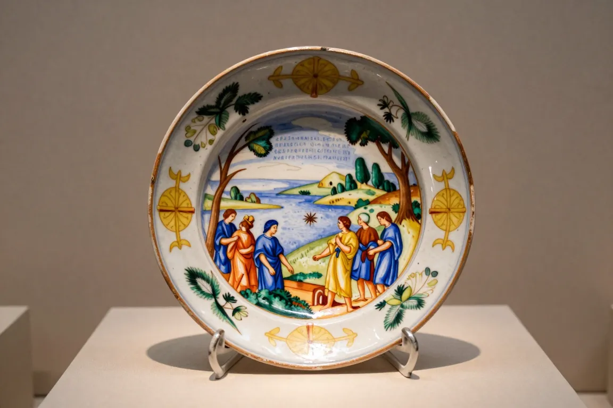

Italiensk tinnglasert leirgods malt med en hel fortelling, kalt istoriato. Malerne kopierte scener fra trykk og fresker og fylte hele flaten på et fat med figurer i farger.

Kjerneidé
Et fat kan være et maleri: hele flaten blir en scene fra myte, skrift eller historie, malt i mange farger på hvit tinnglasur.
Designprinsipper
Mal fortellingen over hele forsiden av fatet, uten bort eller med en smal.
Kopier figurene og komposisjonen fra et trykk, en fresko eller en tegning.
Mal på den rå, tørre tinnglasuren med oksider, i én brenning, og gjør dermed ingen endringer.
Bruk en rik palett: blått, gult, oransje, grønt, manganlilla og hvitt relieff.
Plasser figurene i forgrunnen, og et landskap, en himmel og en liten bygning bak.
Brenn ved 950 til 1000 °C, og legg så til lyster i en tredje brenning for de rikeste stykkene.
Skriv en kort tittel eller maker-merket på baksiden, eller på et banner i scenen.